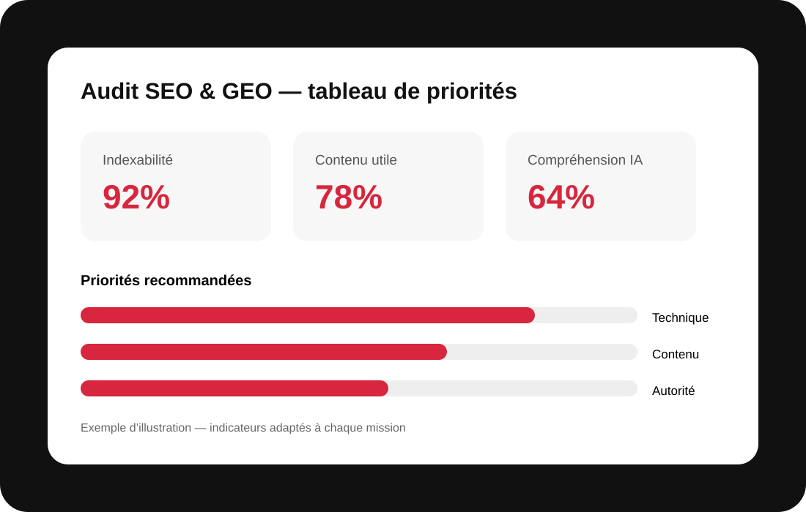

Audit SEO & GEO complet : comprendre ce qui freine votre visibilité
Un bon audit ne se limite pas à une liste d’erreurs. MinoSeo analyse votre site comme un écosystème : accessibilité pour les moteurs, qualité des pages, signaux de confiance, pertinence sémantique et capacité à être compris par les moteurs de réponse IA.

Un audit SEO/GEO conçu pour transformer les constats en priorités concrètes
Un audit qui relie technique, contenu et confiance
L’objectif est d’identifier les causes réelles d’une visibilité insuffisante. Nous examinons l’indexabilité, l’architecture, les balises, les canonicals, le maillage interne, les performances et l’expérience mobile. Cette lecture technique est croisée avec la qualité du contenu, les intentions de recherche et les signaux qui permettent de comprendre qui publie, pourquoi la page existe et si elle répond utilement à son audience.
Qualité de page : finalité, contenu principal, réputation et E-E-A-T
Les Search Quality Evaluator Guidelines invitent à regarder la finalité de la page, la qualité de son contenu principal, la réputation du site et des créateurs ainsi que l’Experience, l’Expertise, l’Autorité et la Fiabilité. MinoSeo utilise ces principes comme grille de lecture qualitative : une page doit avoir un objectif clair, apporter une valeur identifiable, inspirer confiance et rendre son expertise vérifiable. Nous évitons de présenter l’E-E-A-T comme un simple score ou une balise à ajouter.
Indexabilité et architecture : rendre les bonnes pages accessibles
Nous vérifions si les pages stratégiques peuvent être explorées, indexées et comprises. Robots, directives noindex, canonicals, redirections, profondeur de clic, URLs, sitemap et liens internes sont examinés ensemble. Le but n’est pas d’indexer tout le site, mais de faciliter la découverte des pages utiles, de limiter les doublons et de distribuer les liens internes vers les contenus qui portent réellement vos offres et vos expertises.
Contenu utile et GEO : répondre clairement aux humains et aux IA
Pour le SEO comme pour le GEO, le contenu doit d’abord résoudre un besoin réel. Nous étudions la couverture du sujet, la précision des réponses, la structure des titres, les preuves, les définitions et la cohérence des informations de marque. Pour les moteurs génératifs, nous cherchons notamment à rendre les entités, relations, faits et expertises plus explicites, sans sur-optimisation ni promesse de citation automatique dans une réponse IA.
Mesure et priorisation : passer du constat au plan d’action
Un audit utile se termine par des décisions. Les données disponibles dans Google Search Console et les outils d’analytics servent à relier les constats aux impressions, clics, requêtes, pages d’entrée et conversions. Chaque recommandation est classée selon son impact potentiel, son urgence et son effort. Vous obtenez ainsi une feuille de route lisible plutôt qu’un rapport technique difficile à exploiter.
Ce que nous analysons pour construire une recommandation exploitable
| Exploration & indexation | Robots, noindex, canonicals, sitemap, redirections | Sécuriser l’accès aux pages stratégiques |
|---|---|---|
| Exploration & indexation | Robots, noindex, canonicals, sitemap, redirections | Sécuriser l’accès aux pages stratégiques |
| On-page & architecture | Titles, Hn, URLs, maillage, profondeur | Clarifier la structure et les priorités |
| Qualité & E-E-A-T | Finalité, contenu principal, preuves, réputation | Renforcer utilité et confiance |
| GEO | Entités, réponses directes, cohérence, sources | Faciliter la compréhension par les moteurs IA |
| Mesure | Search Console, analytics, conversions | Prioriser selon les données |
Besoin de préparer les sujets à travailler ? Découvrez aussi notre étude de mots-clés et notre analyse des recherches tendances du web.
Une approche d’audit claire, priorisée et adaptée à votre contexte
MinoSeo construit un diagnostic lisible à partir de votre réalité : secteur, concurrence, ressources disponibles, historique du site et objectifs commerciaux. Les recommandations sont hiérarchisées pour distinguer les corrections urgentes, les améliorations structurantes et les optimisations à tester. Vous disposez ainsi d’une feuille de route compréhensible, exploitable par vos équipes ou vos prestataires, sans vous perdre dans une succession de recommandations techniques.
Le SEO et le GEO évoluent avec les usages, les moteurs et la concurrence. Aucune agence sérieuse ne peut garantir une position précise dans Google ou une citation dans une réponse IA. En revanche, il est possible de renforcer méthodiquement les fondations techniques, la qualité éditoriale, la compréhension de votre expertise et la mesure des résultats. C’est cette progression structurée que MinoSeo met au service de ses clients.
Vous souhaitez améliorer votre visibilité SEO & GEO ?
Présentez-nous votre site, vos priorités et vos objectifs. Nous vous proposerons un périmètre clair et des actions adaptées.
Pour compléter le diagnostic, MinoSeo peut associer l’audit à une étude de mots-clés et à nos recherches tendances du web. Cette approche permet de relier les priorités SEO/GEO à la demande réelle et aux sujets à fort potentiel.